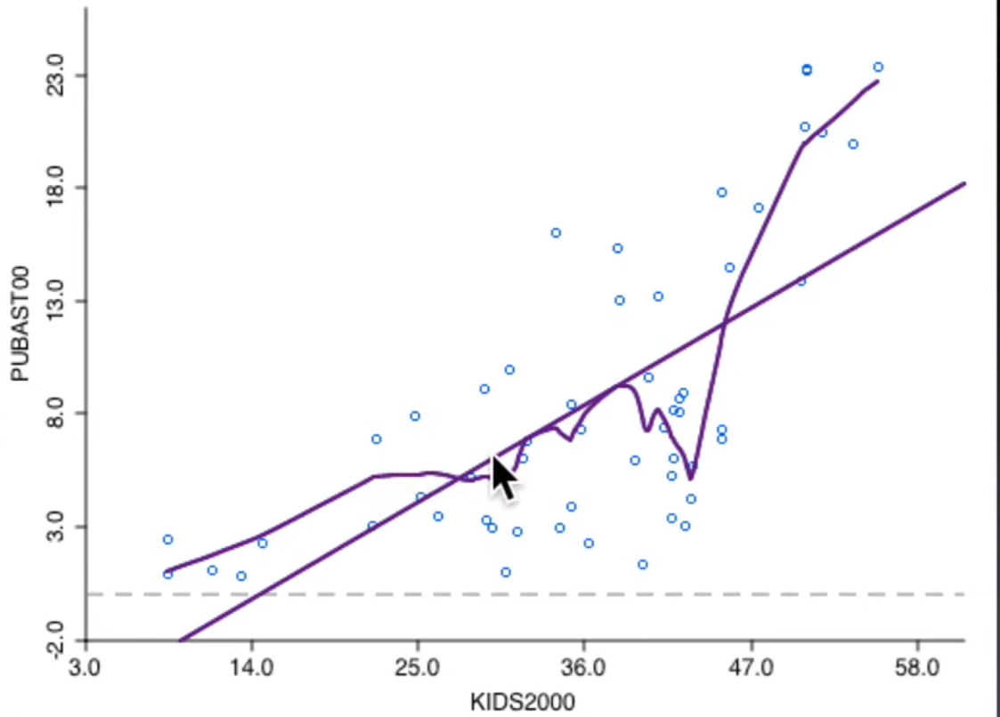
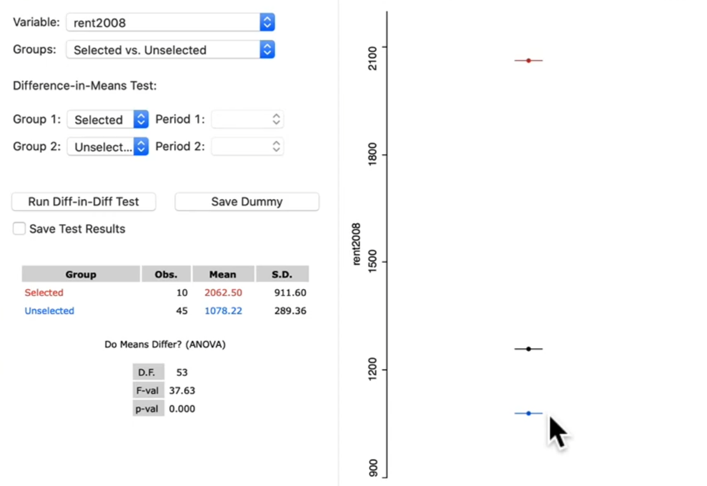
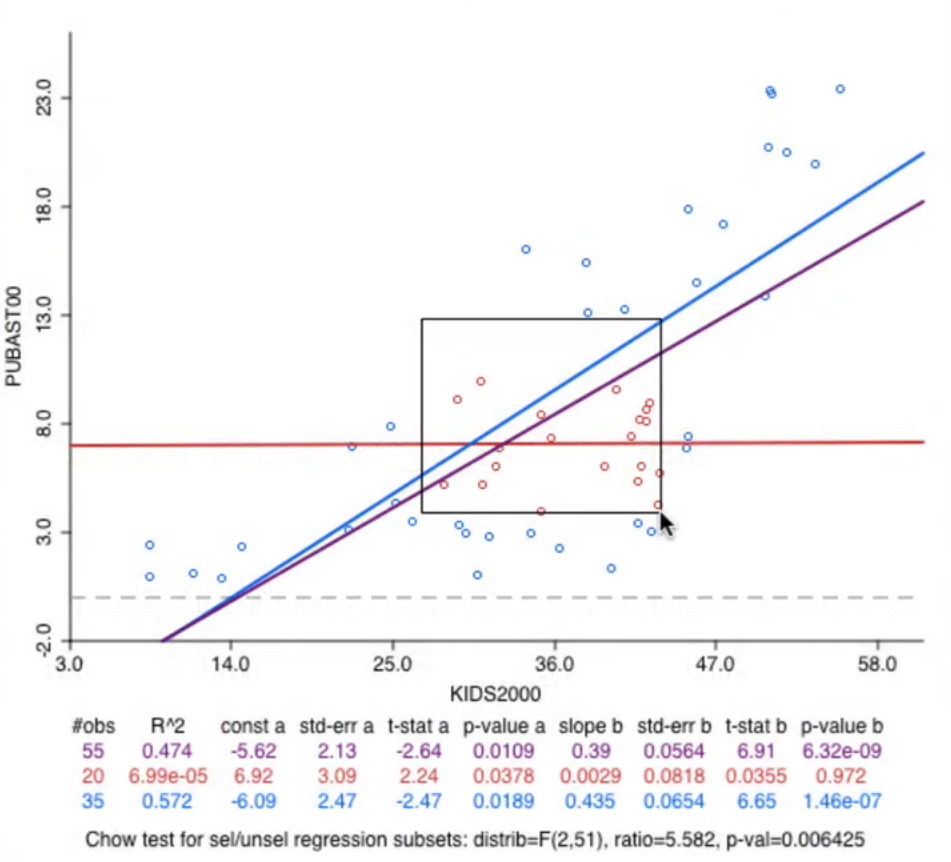
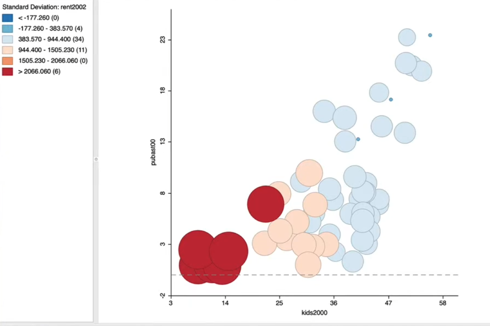
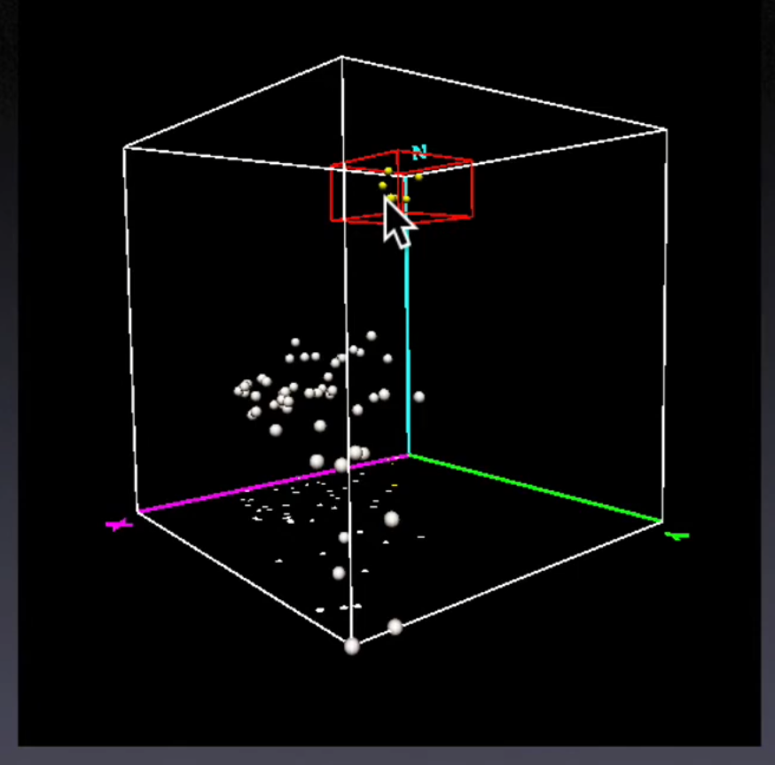
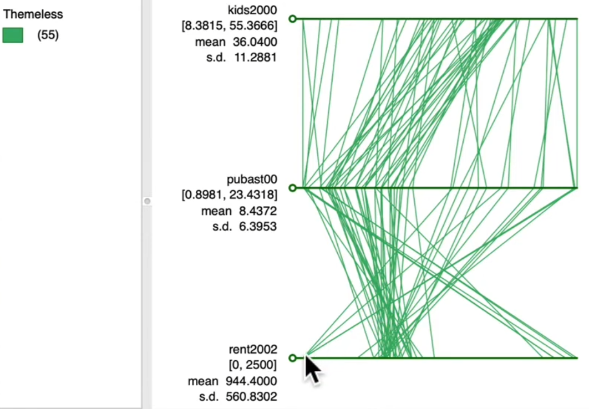

9. Exploratory Data Analysis#
9.1. Basic Statistical Graphs#
9.1.1. Univariate Distribution#
Histogram
Bin / bandwidth

Box plot

9.1.2. Bivariate Distribution#
Scatter plot
Lowess SmootherLocal Regression
Slope based on a subset of observations
For each \(x_i\),\(y_i\), fit based on (x,y) with x in neighborhood of \(x_i\)
Choice of bandwidth
Short
bandwidthyields spiky curveWide
bandwidthyields smoother curve

9.2. Spatial Heterogeneity#
Structural breaksin the data with a spatial imprintDifferent distributions in different subregions a. Different
mean,medianChange in bivariate linear relationship
Structural beak in slope (
Chow Test)
9.3. Tools for Spatial Heterogeneity Analysis (Bivariate)#
9.3.1. Averages Chart#
Test on difference in mean
Selected and Unselected
Spatial selection
Test is
F-statisticfrom dummy variable regressionTest the coefficient of dummy variable is significant or not

9.3.2. Brushing the Scatter Plot#
A brush is a selection shape
Two slopes:
selectedandunselectedAs the brush moves, the slopes are recalculated in a dynamic way =
dynamic brushingThe matching observations in other windows are also selection
Dynamic brushing and linking
Chow Test on Homogeneity of slopes
Hypothesis test on equality of slopes
Overall regression slope
Slope for selected
Slope for unselected
Link map brushing with Chow Test
Insight into spatial heterogeneity

9.4. Multivariate EDA#
9.4.1. Objective#
Represent multi-dimensional data in two dimensions i. Dimension reduction ii. Projection
Discover Structure, interaction, patterns
Exploratory methods do not explain, it suggest
hypotheses
9.5. Methods for multivariate EDA#
9.5.1. Bubble Chart#
e.g. kids in family vs public assistants number vs high rent (sd)
Enhanced Scatter Plot
Size of bubble : third variable
Color of bubble: Fourth variable
Explore interaction among variables
Explore structural breaks

9.5.2. 3D Scatter Plot#
Points in a 3D data cube
Two-Dimensional analysis on side panels
Issues of perspective
Zooming, Rotating
Brushing the 3D data Cube

9.5.3. Parallel coordinate plot(PCP)#
Variables
One parallel line for each variable
Outliers are far from the main pack
Observations
A line connecting points on parallels
The line is the counterpart of a point in the multidimensional data cube

9.5.4. Conditional Plots#
Interpretation of Conditional Plots
Micro plots are similar, no effect of conditioning variables
Micro plots are different, effect of conditioning variables